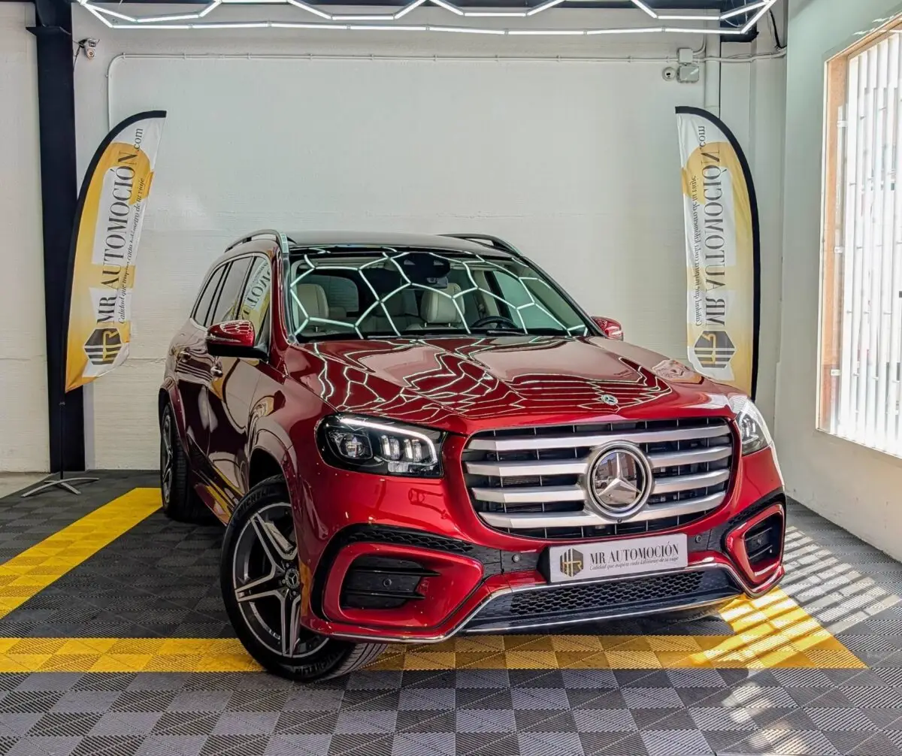

1 / 24Ponemos a la venta este espectacular e impecable Mercedes-Benz GLS 450 d 4MATIC , el SUV de lujo por excelencia en su configuración más exclusiva y elegante. Una unidad matriculada en febrero de 2024 con 72.000 km . Este titán de la carretera representa la máxima expresión de confort y estatus, ofreciendo un habitáculo de auténtica primera clase capaz de albergar hasta a 7 pasajeros adultos con total comodidad.
Bajo su imponente capó equipa el refinado y contundente motor diésel de 6 cilindros en línea y 3.0 litros , asociado a la rapidísima transmisión automática 9G-TRONIC y al eficaz sistema de tracción integral permanente 4MATIC . Gracias a su avanzada tecnología microhíbrida (mild hybrid de 48V), este bloque desarrolla una potencia combinada excepcional con un empuje soberbio desde bajas revoluciones, manteniendo unos consumos asombrosamente contenidos para su envergadura y beneficiándose de todas las ventajas de la etiqueta ECO de la DGT .
Configuración exterior manufaktur y ADN amg: Pintura manufaktur rojo jacinto: Un color metalizado premium de la división más exclusiva de Mercedes-Benz, que ofrece un reflejo y una profundidad extraordinarios bajo la luz del sol. Línea exterior amg line: Paragolpes delantero específico con entradas de aire optimizadas, faldones laterales deportivos y pasos de rueda ensanchados.
Llantas amg de 21": Espectaculares llantas de aleación ligera amg con diseño de doble radio, calzadas sobre neumáticos mixtos de altas prestaciones y acompañadas por un sistema de frenos sobredimensionado con discos perforados en el eje delantero. Confort de marcha de primera: Equipa la sofisticada suspensión neumática semiactiva airmatic con amortiguación regulable de doble control, capaz de alfombrar cualquier irregularidad del firme y ajustar la altura del vehículo según el modo de conducción.
Iluminación e inteligencia: Faros led dinámicos inteligentes de alta intensidad con asistente de luces de carretera automáticas plus, cristales traseros tintados oscuros ( privacy ) y sistema de proyección del logotipo de la marca mediante proyector animado en el suelo al abrir las puertas.
Un interior de primera clase en cuero beige y madera de roble Ambiente exclusivo beige y madera: Espectaculares asientos multicontorno tapizados en cuero premium color beige , combinados de forma magistral con molduras interiores en madera de roble gris de grano abierto y el salpicadero completamente revestido en cuero artesanal.
Asientos delanteros con masaje y climatización: Orientados al bienestar total, los asientos delanteros son completamente eléctricos con memoria, disponen de función de masaje , reposacabezas de confort y climatización inteligente ( calefacción y ventilación activa tanto para invierno como para verano).
Máximo confort en plazas traseras y 3ª fila: Las plazas de la segunda fila cuentan con calefacción independiente y reposapiés integrados. Además, dispone de una tercera fila con dos asientos adicionales de desplegado y plegado 100% eléctrico mediante botón desde el maletero. Sonido premium burmester: Sistema de audio surround de alta fidelidad firmado por el especialista Burmester, que inunda el habitáculo con una claridad acústica de sala de conciertos.
Techo solar panorámico: Gran techo corredizo de cristal que aporta una luminosidad sensacional a las tres filas de asientos. Tecnología de vanguardia y seguridad total Puesto de mando digital: Volante deportivo multifunción en piel napa, doble pantalla digital panorámica con control gestual sin contacto en la parte frontal y head-up display (proyección de información en el parabrisas).
Paquete de asistencia a la conducción de nivel 2: Equipado con control de crucero adaptativo inteligente (distronic plus), asistente activo de mantenimiento de carril, reconocimiento de señales de tráfico y avisador de colisión con frenado autónomo. Seguridad guard 360°: Sistema integral de protección del vehículo frente a robos o vandalismo con monitorización del entorno.
Facilidad de maniobra: Sistema de aparcamiento activo asistido con cámaras de visión 360 grados (vista envolvente en alta definición) y sensores perimetrales. Detalles premium de confort: Sistema keyless-go (apertura, cierre y arranque sin llave), portón trasero automático, portavasos delanteros climatizados (frío/calor), paquete de calidad del aire con ionizador, superficie de carga inalámbrica para el smartphone y múltiples puertos usb de alta potencia (100W) tanto delante como detrás.
Tu compra segura con MRautomoción Disfruta del SUV premium definitivo con la total transparencia y tranquilidad que te ofrece nuestro equipo profesional: ✅ Mantenimiento y revisión completa: Vehículo rigurosamente inspeccionado en nuestro taller colaborador. ✅ Kilometraje certificado. ✅ Garantía completa de 1 año (12 meses) incluida. ✅ Transferencia incluida: Precio definitivo llave en mano, sin sorpresas ni costes ocultos. ✅IVA deducible incluido. ✅ Consúltanos nuestras ventajosas opciones de financiación flexible a tu medida con excelentes condiciones.
| Marca | Mercedes-Benz |
|---|---|
| Modelo | Mercedes-Benz GLS 450d 367CV 4Matic 2024 |
| Año | Feb 2024 |
| Kilómetros | 72.000 km |
| Combustible | Híbrido |
| Cambio | Automático |
| Potencia | 367 CV |
| Garantía | 1 Año |
| IVA | DEDUCIBLE INCLUIDO |
Quizá también te encaje